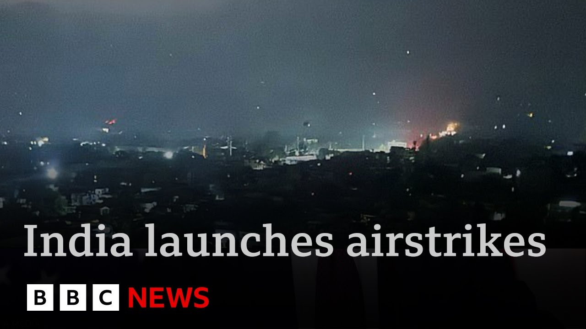

来B站一起耍【Global每日英语简报】
【我们今晚以一则突发新闻开始：印度对巴基斯坦及巴控克什米尔和查谟地区发动了袭击。印巴这两个核大国关系长期紧张，但自上月克什米尔游客遇袭事件后急剧恶化。巴基斯坦誓言将在其选择的时间和地点进行报复，而这一行动可能已经开始。国际编辑杰里米·博恩将为我们带来更多细节。】
Summary: Tonight we start with breaking news that India has launched an attack on Pakistan and Pakistan-administered Kashmir and Jammu.
摘要： 今晚我们以突发新闻开始：印度对巴基斯坦及巴控克什米尔和查谟地区发动了袭击。

⏱️ Estimated Reading Time: 5 min
Relations between India and Pakistan, two nuclear powers, have long been tense but deteriorated sharply following a deadly militant attack on tourists in Kashmir last month.
印巴这两个核大国关系长期紧张，但自上月克什米尔游客遇袭事件后急剧恶化。
Pakistan is vowing to retaliate at a time and place of its choosing.
巴基斯坦誓言将在其选择的时间和地点进行报复。
It looks like that may be underway.
这一行动可能已经开始。
Our international editor Jeremy Bone is here and Jeremy this news is just coming in.
国际编辑杰里米·博恩将为我们带来更多细节。
So what more can you tell us? Fill us in.
那么，你还能告诉我们什么？请详细说明。
Well, there are a few things to think about here tonight.
今晚有几件事需要考虑。
First of all, the question is whether India will decide that their honor has been satisfied after that attack.
首先，问题是印度是否会认为这次袭击已使其荣誉得到满足。
Now, let's not get ahead of ourselves here.
现在，我们不要过早下结论。
This at the moment is a response to an attack which India is blaming on Pakistan on militant groups that are based there.
目前这是对一次袭击的回应，印度将责任归咎于巴基斯坦及其境内的武装组织。
They have hit nine places with various kinds of missiles that they've got.
他们用多种导弹袭击了九个地点。
And they have been hinting that something like this will happen.
他们此前已暗示过类似行动可能发生。
It's been on the cards.
这是预料之中的。
So let's hope that internationally people are ready to try and calm the situation down to make sure it doesn't go any further than it needs to get.
因此，希望国际社会能努力缓和局势，防止事态进一步升级。
Because India and Pakistan have a long history of tension between them and over the disputed area of Kashmir which has been disputed since the partition of India just after the second world war.
因为印巴长期存在紧张关系，尤其在克什米尔争议地区，该地区自二战后印巴分治以来一直存在争议。
Well, as you say, Jeremy, this has been on the cards for some time.
正如你所说，杰里米，这一局势已酝酿多时。
Relations have been extremely tense between the two countries for a number of years.
多年来两国关系一直极度紧张。
Yeah, they have been tense.
是的，确实如此。
And so, that's why this is something that we've got to be concerned about.
因此，这正是我们需要担忧的。
But also, I think first of all, both sides will know what the stakes are here.
但首先，我认为双方都清楚其中的利害关系。
So, as I say, really important for everybody looking at this, people who might be worried about it, people who might have family out there, people who are concerned about what may happen.
正如我所说，这对所有关注此事的人——担忧者、有亲属在当地的人、关心事态发展的人——都至关重要。
And journalists must not get ahead of themselves at the moment about this.
记者此刻不应过早下结论。
Now, it's obviously breaking news in the world, but it's something that now there has to be a major diplomatic push to stop it escalating, to calm things down, for both sides to say, "Right, honor has been satisfied. Now, we can draw a line."
这显然是全球突发新闻，但现在需要重大外交努力来阻止局势升级、缓和事态，让双方宣布“荣誉已得到维护，现在可以划清界限”。
Jeremy, thank you very much.
杰里米，非常感谢。
Well, we can now go live to Samir Hussein reporting from India for us.
现在我们将连线在印度报道的萨米尔·侯赛因。
Samir, what can you tell us?
萨米尔，你能告诉我们什么？
Well, look, so far the only details that we're getting here in India are actually from the Indian government and not the army.
目前我们在印度获得的所有细节都来自印度政府而非军方。
And what they're saying is that they have hit nine targets in Pakistan.
他们表示已袭击了巴基斯坦境内的九个目标。
They're saying that these targets were in fact militant targets.
他们称这些目标实际上是武装分子据点。
They are saying that they did not target the Pakistan military.
他们表示并未针对巴基斯坦军方。
And they're saying that right now actually you're seeing some reports of artillery shelling happening between the two countries at some points along the line of control.
他们称目前有报道称双方在控制线沿线某些地点发生了炮击。
And now really what's going to happen is everyone's looking towards Pakistan in terms of what kind of retaliation we may see.
现在所有人都在关注巴基斯坦可能采取何种报复行动。
Now remember it's been 12 days since that attack that happened targeting all these tourists and many people have been wondering about what was going to happen between India and Pakistan.
别忘了自游客遇袭事件已过去12天，许多人一直在猜测印巴之间会发生什么。
Remember along this line of control there has been quite a long ceasefire that has clearly been breached.
需注意控制线沿线长期维持的停火协议已被明显打破。
And so now there's a real concern in terms of what Pakistan's response may be to what's just happened.
因此现在人们真正担忧的是巴基斯坦对刚刚发生事件的反应。